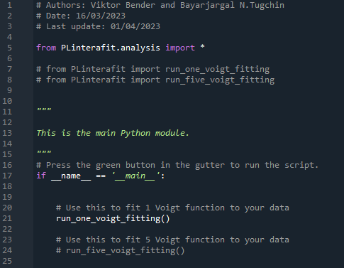
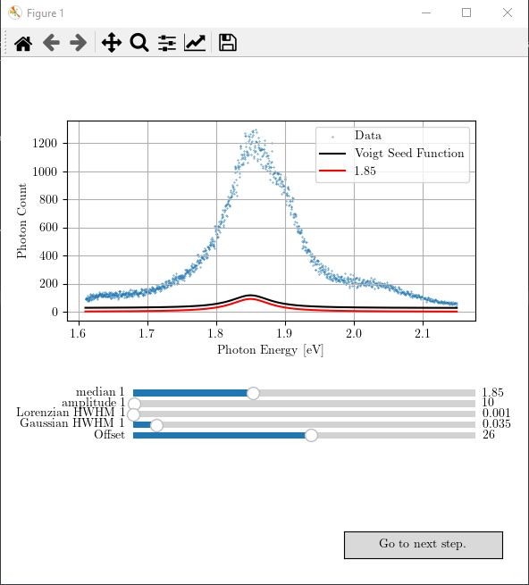
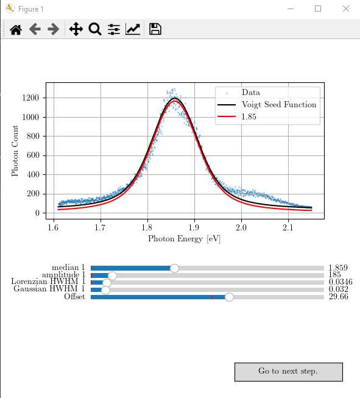
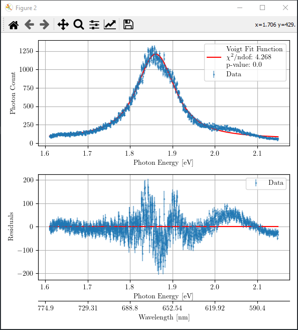
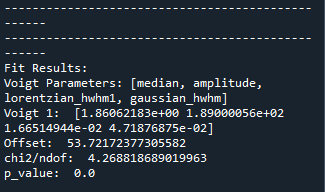
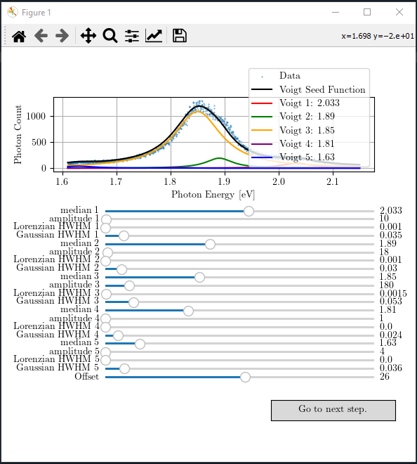
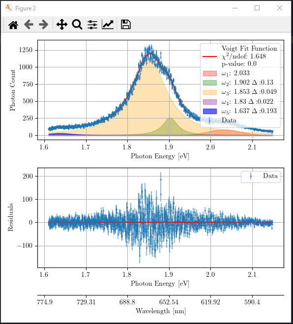
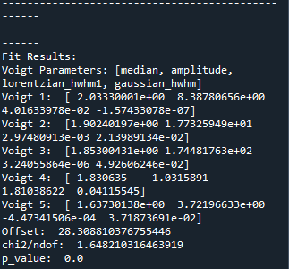

Tutorial
Here, we briefly describe the usage of PLinterafit package. The tutorial will be structured in a way that you try first the given version with the given data so that you can judge if the PLinterafit is suitable for you. In the end, we comment on how you can adapt for your own personal use.
Getting started
Calling ‘run_one_voigt_fitting’ function
Import the relevant functions from PLinterafit package in the ‘main.py’. An example is shown below.
{kind=link}
You can now simply compile the file. If successful, it will produce a figure with the respective interactive slides like the following.
{kind=link}
You can play with the sliders and obtain the best possible seed values for the next curve fitting step. The result may look like as follows.
{kind=link}
If you are satisfied with your adjusted seed values for the Voigt function, you can proceed to the next step of statistical analysis by pressing the button “Go to next step”. If the seed value was good, and the aimed statistical percision has reached (it is set to \(10^{-20}\) in the function ‘prepare_data_for_stat_test’), it will produce a figure like the following.
{kind=link}
If you are not satisfied with the obtained goodness of fit for your fitting, you may close this figure with statistical analysis and go back and repeat the adjustment process in the first figure with interactive sliders. You can refine the parameters as many times as you want.
The optimized fit parameters for the Voigt function and the goodness of fit are printed in the console as follows.
{kind=link}
You should aim to achieve \(\chi^2/\) ndof and p-value close to 1 where ndof refers to the degree of freedom. Note that we only take into account for the underlying noise distribution of ‘poissonian’ or ‘gaussian’ in the statistical analysis. However, there might also exist some other fluctuations in the data; like in this case, there is an underlying interference oscillation in the data. Therefore, statistical results are not perfect in terms of \(\chi^2/\) ndof and p-value. In such case, the residue graph can assist you on assessing the quality of fit. In case of only one Voigt fitting, all statistical indicators suggest that the fitting is not good, and one should include more Voigt functions!
Calling ‘run_five_voigt_fitting’ function
You may also call the ‘run_five_voigt_fitting’ to fit five Voigt functions to the measured spectrum. Like before, it will produce a figure with the respective interactive slides like the following.
{kind=link}
Again, you can proceed to the next step of statistical analysis by pressing the button “Go to the next step”. If the seed values were good, and the aimed statistical percision has reached, it will produce a figure like the following.
{kind=link}
The optimized fit parameters of all five Voigt functions and the goodness of fit are printed in console as follows.
{kind=link}
You may close the figure with statistical analysis and repeat the seed value adjustment as many times as you want if you are unsatisfied with your curve fitting optimization.
Customization
Using your own data file
When you install PLinterafit package, it also loads as provided data ‘ExampleData_monolayerMoS2onSi02.asc’ and calls it in both functions for testing. You can see it in ‘run_one_voigt_fitting()’ function’s code shown below.
def run_one_voigt_fitting(): """ Performs a Voigt fitting on photoluminescence spectral data. Returns: int: 0 on successful completion of function. """ # Importing data and preparing the data for analysis # Data has the first column as wavelengths in nanometers and the second column as photon counts data1 = load_data('example_data/ExampleData_monolayerMoS2onSi02.asc', 0, 1) data1 = get_fit_data(data1, 1.5, 2.15) plotData1 = data1 # Example of calling fit_one_voigt function # We pass the data, initial values for the Voigt function, and the underlying noise distribution type fit_one_voigt(plotData1, median=1.85, amplitude=10, lorentzian_hwhm=.001, gaussian_hwhm=.035, offset=26, mode="poisson") return 0
If you want to use your own data for the fitting and the statistical analysis, you may edit the file path in either ‘run_one_voigt_fitting()’ function or ‘run_five_voigt_fitting()’ function in ‘analysis’ module. You can also change the initial seed values of the Voigt functions here.
Adding or removing more Voigt functions
In ‘PLinterafit’ package, we only provided as an example two versions of Voigt function fitting: with one or with five Voigt functions. You may easily customize the package by removing or adding one or more Voigt functions to suit your need. We recommend you to take example from the five Voigt function fitting and modify the functions in the following modules:
analysis
fitting
plotting
dataPreparation
models
Let’s assume that you want to fit three Voigt function to your data. You can copy and paste all functions that are relevant to the five Voigt function fitting and then modify them.
Create ‘run_three_voigt_fitting()’ function in ‘analysis’ module and modify the content accordingly (assuming you copy-pasted ‘run_five_voigt_fitting()’ function)
call fit_three_voigts(…) instead of fit_five_voigts(…)
reduce the number of initial seed values
Create ‘fit_three_voigts()’ function in ‘fitting’ module and modify the content accordingly.
edit the input parameter list
modify ‘update()’ function
reduce the updated y-axes of graphs in the figure
reduce the parameters in ‘seed’ list
modify ‘do_statistical_analysis()’ function
call ‘plot_fitted_results_three_voigt()’ function
reduce the printed result lines
change the name of the function ‘func’ to ‘three_voigt’
‘seed’ list should be changed
call ‘plot_data_and_three_voigt_seed_function()’ to acquire Figure and Axes object handles
reduce the number of ‘compX_line’ that plots the different Voigt functions
reduce the number of sliders
Create ‘plot_fitted_results_three_voigt()’ and ‘plot_data_and_three_voigt_seed_function()’ in the ‘plotting’ module. Of course, reduce the number of Voigt functions that are plotted.
Modify ‘prepare_data_for_stat_test()’ function in ‘dataPreparation’ module
reconfigure the normalization of Voigt functions for the statistical test which is written as
by adding the following two lines
elif function_name == three_voigt: idx_to_correct = [1, 5, 9, -1]
Create ‘three_voigt()’ function by taking example from ‘five_voigt()’ function in ‘models’ module.
reduce the number of input parameters
reduce the number of Voigt component added in the return value
Lastly, you should modify the ‘main.py’ to call the right function.
{kind=link}
Have fun!